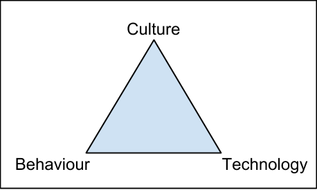

DevsOpsDays Toronto
Overview and Random Musings
or
"Why I got paid to hang out in Toronto for two days and tweet about it."
Created by Tom Dyer / @thomaswsdyer
Powered by reveal.js
What is DevOps?
DevOps is NOT
- A set of tools
- A process / set of processes
- Something you make
- What you do
- What you are
- Devs pushing to Production with no tests
So if it's not these........
DevOps Is
Simply put:
"DevOps is a philosophy."
A concept that promotes:
- Transparency
- Collaboration
- Breaking down "silos"
- Lean Thinking
- Agile Methods
- Visibility
and so on, and so on,...
DevOps Battles Inhumanity!
Ticketing Systems as Tools of Oppression?
I created a ticket! It's your problem now!
On-Call Sucks!
Woken up in the middle of the night for something out of your control?
On call twice (or more) per month?
One-man Ops Team?
Agile Methods
More work with less people!
Responsibility with no Authority
We chose this soution, look after it! - Whoops it sucks!
The CAMS model
- Culture
- Automation
- Measurement
- Sharing
But...
Changing
Culture is hard
Start simple
DevOps is Laying the SMAC Down!

DevOps Starts with Sharing
- Blog posts
- Presentations
- Books
- Practices
- Attend MeetUps
Start the conversation!
Let Me Share With You
If I Were to Keynote...
DevOps and Fighter Jets
DevOps scares people. - Why?
.jpg)
DevOps empowers
Continuous Improvement
Whether it's a goal or a by-product,
the philosophy of DevOps leads to
Continuous Improvement in those that adopt it.
The key to Continuous Improvement is lowering cycle time.
Low cycle time makes better fighter jets!
Let's pretend we're dogfighting
Even equal time:
- You can make and respond to 3 decisions.
- I can make and respond to 7 decisions.
Shorter cycle time = Quicker to learn and adapt
DevOps Makes Better Fighter Jets!
Reducing the time and reducing the barriers between
discovery, analysis, feedback and response
leads to quicker learning!

Continuing to Continuously Improve
Processes and Practices
"Do Not Fear Failure."
Failure Testing
Failure Testing = Taking control of failure!
Failure WILL happen
- Bugs in 'exceptional' code paths
- Systems won't recover as quickly as expected
- What is 'normal' when things aren't?

Inject Failure
- Create a controlled test (Stop a service, restart a server, etc)
- Alert and respond as "normal"
- Analyze the results
- What worked, what needs improvement?
SHARE THE RESULTS!
Successful Failure
System and Operational knowledge sharing
How it's supposed to work vs. How it acutally works
Highlights "untestable" systems
If you can't test it, it's not fault tolerant
How do we begin?
- Start small
- Automation can come later
Fail often...but fail TOGETHER!
Working With a Distributed Team
It's all about CAP.
- Consistency
- Availability
- Partition Tolerant
Consistency
Information and Transparency
Availability
Overlap and Face Time
Flexible Work Hours, Make yourself available!
Partition Tolerant
Small, flexible teams
Self-Organizing
Independent
Tooling?
Communication
- Ephemeral
HipChat, Skype, Goto Meeting - Persistent
Email - Permanent
Wiki, JIRA, Pull Requests
Tooling?
Solving the "Over the Shoulder" Problem
- Screen sharing
- tmux/wemux-ing
- Consistent Tooling
IntelliJ, rvm/ruby, SQL Developer
Anything Else?
Keep Up Process!
Standups, Retros, 1-on-1's
Share Metrics!
All about transparency
Culture - Like the people!
Keep the Sharing Going!
IGNITE Talks
IGNITE Talks are quick, organized presentations on a small, but complete topic
- 20 slides
- 5 minutes
- Slides auto-advance every 15s
Open Space Concept
Stimulate diverse, AdHoc conversations between particpants
Participants submit a list of topics they want to discuss
The group votes for the popularity / interest in each topic
The group decides how to split up the selected topics
For example, three concurrent groups, 45 minutes each, three time blocks
Participants can join whichever discussion they want, for however long they want.
Conversations are unstructured and informal.
Tools
Docker
Container technology is very new, but very exciting!
"Containerizing" tools and processes creates a division of tasks.
Docker Containers for Workstations - Each container has the tools and setup to accomplish a specific task.
Container != VM
- SoliumScripts
- Wrecker Dev Setup
- "Phoenix" Sensu clients
Ansible
Light-weight configuration management tool.
Shallow learning curve.
Wiki Setup Page of Doom? --> Ansible playbook.
Concentric Shell Scripts? --> Ansible Playbook
serverspec
Test your infrastructure!
Validate your Configuration Management.
We would want it for PAAS.
Leads to "Test Driven Infrastructure".
Decoupled from Configuration Management.
3rd Party Services
PagerDuty
Still no.
DataDog
Platform monitoring tool.
It's not NewRelic - Focused on 'Capacity Monitoring'.
No application traces - Not for code optimization.
Java / JMX Compatible.
Integrations for Nagios (in) and OpsGenie (out).
Open sourced plugins - We could write our own!
The End
...of Day 1.
Day Too?!?!?!

Continuous Devilry
It is NOT:
Continuous Deployment
Automating ALL THE THINGS!
It IS:
Eliminating bottlenecks in delivering software!
Some blockers:
- Releases disrupt customers
- Operations can handle increased releases
- Ops and Dev can't support more releases
- Releases tied to DB changes
Continuous Delivery is about removing blockers!
Guerilla DevOps Warfare
Conquering the Impossible Project!
- What comes first Culture or Technology?
- Getting others to see the Whole System.
- Architecture Matters - Everywhere!
Culture or Technology?
Neither!
Reflexive Feedback Loops - Changing one (or two) changes the others!
Seeing The System
Map out your processes to see where bottlenecks exists!
Define your end goals!
Especially when choosing technology!
Did I mention SHARING?
Architecture Matters
EVERYWHERE!
- Software - scale and change
- Business - what are we doing, why?
- Team - who protects who?
- Process - coordination of work, expectations
How TELUS is Doing It
TELUS (~43K Employees) is starting to employ DevOps principles
They use a "Transformation Team" to:
- Evaluate existing workflows
- Empower teams to breakdown Dev and Ops barriers
- Promote "Change Champions" to carry the message
How are they doing?
Two years into a five year plan.
"Planted the seeds" into various small groups of TELUS.
Starting to see small returns in small groups - Koodo
Executive Buy-in! - from the CEO!
ChatOps
HipChat, Slack, or FlowDock
Chatbots!
Alerts, Notification, and Deployments
We are leading the charge!
In Conclusion
Lessons Learned
Our deployments are pretty good!
"Two button deployment!"
We are leading the charge on ChatOps!
Deploy spikes, alerts, LiveBot, Front-End Business
There's no alternative to Liquibase.
You're using it or you're not
Everyone is as bad at schema migrations as us
We're doing DevOps with the Business!
JIRA Workflows, ChatOps, Dashboards, Post-mortems
Takeaways
We should be running PaaS.
Let's amp up our serverspec efforts.
Even for manually created infrastructure
Logstash - nohup is good hup.
Start sharing with Dev!
Guerilla DevOps Warfare
Moar MeetUps!
More Takeaways
Give DataDog a shot.
Dockerize sensu-clients.
What are our barriers for delivery?
lita.io for LiveBot?
Fun Facts
The Cloud = SAAS + Amazon + 'A bunch of stuff that doesn't really matter'
A small box of business cards looks like a juice box in an airport baggage scanner...
Really
The End
..I mean it.
Totes...mah goats!